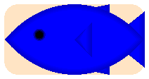
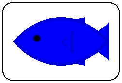
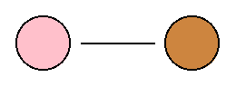
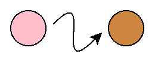
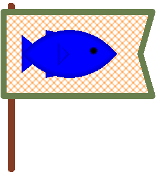
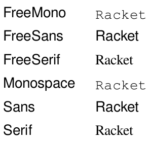

Pict Abbrevs
| (require pict-abbrevs) | package: pict-abbrevs |
Changed in version 0.3 of package pict-abbrevs: The pict-abbrevs module no longer reprovides pict-abbrevs/slideshow, and consequently no longer depends on racket/gui/base.
1 Pict Utilities
value
If the name revolution is too long, then do (require (rename-in pict-abbrevs [revolution turn])).
> (arrowhead 30 (* 0 revolution))
> (arrowhead 30 (* 1/4 revolution)) > (arrowhead 30 (* 1/2 revolution))
contract
contract
> (nonnegative-real? 0) #t
> (nonnegative-real? 2.77) #t
> (nonnegative-real? 9001) #t
> (nonnegative-real? -1) #f
> (nonnegative-real? 'X) #f
contract
pict-color/c : (-> any/c boolean?)
procedure
(pict-color->color% pc #:default default) → (is-a?/c color%)
pc : pict-color/c default : pict-color/c
> (pict-color->color% "blue") (object:color% ...)
> (pict-color->color% #f) (object:color% ...)
contract
rgb-triplet/c : (-> any/c boolean?)
procedure
(rgb-triplet->color% c) → (is-a?/c color%)
c : rgb-triplet/c
procedure
(hex-triplet->color% n) → (is-a?/c color%)
n : (integer-in 0 16777215)
https://image-color.com can select hex colors from an image.
value
racket-red : (is-a?/c color%)
= (hex-triplet->color% (string->number "#x9F1D20"))
value
racket-blue : (is-a?/c color%)
= (hex-triplet->color% (string->number "#x3E5BA9"))
{kind=link}
> (define red (string->color% "red")) > (disk 20 #:color red) > (disk 20 #:color (color%-update-alpha red 0.3))
procedure
(pict-bbox-sup p ...) → (listof pict?)
p : pict?
procedure
(pict-bbox-sup* p*) → (listof pict?)
p* : (listof pict?)
> (max* '(8 6 7)) 8
> (min* '(8 6 7)) 6
> (midpoint 10 20) 15
procedure
w : real? h : real? c : pict-color/c = "black"
procedure
(string->color% str) → (is-a?/c color%)
str : string?
procedure
ps : path-string? p : pict? kind : (or/c 'png 'jpeg 'xbm 'xpm 'bmp) = 'png
procedure
(add-rectangle-background pp [ #:radius radius #:color color #:draw-border? draw-border? #:x-margin x-margin #:y-margin y-margin]) → pict? pp : pict? radius : real? = 10 color : pict-color/c = "white" draw-border? : boolean? = #false x-margin : real? = 0 y-margin : real? = 0
> (add-rectangle-background (standard-fish 100 50) #:color "bisque") 
procedure
(add-rounded-border pp [ #:radius radius #:background-color bg-color #:frame-width frame-width #:frame-color frame-color #:x-margin x-margin #:y-margin y-margin]) → pict? pp : pict? radius : real? = 10 bg-color : pict-color/c = "white" frame-width : real? = 1 frame-color : pict-color/c = "black" x-margin : real? = 0 y-margin : real? = 0
> (add-rounded-border (standard-fish 100 50) #:x-margin 20 #:y-margin 30) 
procedure
(add-spotlight-background pp [ #:blur blur #:border-color border-color #:color color #:border-width border-width #:x-margin x-margin #:y-margin y-margin]) → pict? pp : pict? blur : (or/c #f real?) = 15 border-color : pict-color/c = "plum" color : pict-color/c = border-color border-width : real? = 10 x-margin : real? = 40 y-margin : real? = 40
> (add-spotlight-background (jack-o-lantern 80))
> (add-spotlight-background (jack-o-lantern 80) #:border-color "firebrick" #:color (color%-update-alpha (string->color% "white") 0) #:border-width 15 #:x-margin 30 #:y-margin 5)
procedure
(tag-append x ...) → symbol?
x : any/c
(string->symbol (string-join (map ~a x*) "-"))
> (tag-append 'N 'W) 'N-W
> (tag-append "-" 1) '--1
procedure
(add-hubs pp tag [ #:hub-length hub-len #:margin margin]) → pict? pp : pict? tag : symbol? hub-len : (or/c nonnegative-real? #f) = #f margin : (or/c nonnegative-real? #f) = #f
Each hub has a tag based on its compass direction: (tag-append tag 'N) for the top hub, (tag-append tag 'E) for the right hub, (tag-append tag 'S) for the bottom hub, and (tag-append tag 'W) for the left hub.
The hub-len sets the size of each hub. Imagine an invisible length of string hub-len units long centered at and parallel with each side of the pict.
The margin sets the distance between a hub and the edge of the base pict. If #f, the default is a small positive distance.
> (let ((pp (ht-append 40 (add-hubs (disk 30 #:color "pink") 'A) (add-hubs (disk 30 #:color "peru") 'B)))) (pin-line pp (find-tag pp 'A-E) rc-find (find-tag pp 'B-W) lc-find)) 
> (let ((pp (ht-append 40 (add-hubs (disk 30 #:color "pink") 'A) (add-hubs (disk 30 #:color "peru") 'B)))) (pin-arrow-line 9 pp (find-tag pp 'A-E) rt-find (find-tag pp 'B-W) lb-find #:start-angle (* 1/8 revolution) #:end-angle (* 1/8 revolution) #:start-pull 5/4 #:end-pull 5/4)) 
procedure
pp : pict? width : nonnegative-real? height : nonnegative-real?
1.1 Pict Constructors
The pict function ghost is similar, but preserves tags and other metadata.
procedure
(make-compass-pict side-len [#:color color]) → pict?
side-len : nonnegative-real? color : pict-color/c = "black"
> (make-compass-pict 10) > (make-compass-pict 20)
procedure
(make-mouse-cursor-pict w h [#:color color]) → pict?
w : nonnegative-real? h : nonnegative-real? color : pict-color/c = "black"
> (make-mouse-cursor-pict 20 32)
procedure
(make-simple-flag base [ #:flag-background-color flag-background-color #:flag-border-color flag-border-color #:flag-border-width flag-border-width #:flag-brush-style flag-brush-style #:flag-x-margin flag-x-margin #:flag-y-margin flag-y-margin #:pole-width pole-width #:pole-height pole-height #:pole-color pole-color #:pole-border-color pole-border-color]) → pict? base : pict? flag-background-color : (or/c (is-a?/c color%) #f) = #f flag-border-color : (or/c (is-a?/c color%) #f) = #f flag-border-width : (or/c nonnegative-real? #f) = #f flag-brush-style : (or/c brush-style/c #f) = #f flag-x-margin : (or/c nonnegative-real? #f) = #f flag-y-margin : (or/c nonnegative-real? #f) = #f pole-width : (or/c nonnegative-real? #f) = #f pole-height : (or/c nonnegative-real? #f) = #f pole-color : (or/c (is-a?/c color%) #f) = #f pole-border-color : (or/c (is-a?/c color%) #f) = #f
Increase flag-x-margin and flag-y-margin to add space between the base pict and the edge of the flag.
> (make-simple-flag (standard-fish 80 40 #:direction 'right)) 
procedure
(make-font-table-pict example-str [ #:size font-size #:limit n]) → pict? example-str : string? font-size : (or/c (integer-in 1 1024) #f) = #f n : (or/c exact-nonnegative-integer? #f) = #f
> (make-font-table-pict "Racket" #:limit 6) 
2 Slideshow Abbrevs
| (require pict-abbrevs/slideshow) | package: pict-abbrevs |
contract
slide-assembler/c : chaperone-contract?
procedure
(slide-assembler/background base-assembler #:color background-color [ #:draw-border? draw-border? #:border-color border-color #:border-width border-width]) → slide-assembler/c base-assembler : slide-assembler/c background-color : pict-color/c draw-border? : boolean? = #false border-color : pict-color/c = #false border-width : (or/c #f real?) = #false
#lang racket/base (require pict-abbrevs/slideshow slideshow) (parameterize ((current-slide-assembler (slide-assembler/background (current-slide-assembler) #:color "red")) (current-font-size 60)) (slide (t "HOLA")))
procedure
(pixels->w% x) → real%
x : nonnegative-real?
procedure
(pixels->h% x) → real%
x : nonnegative-real?
procedure
(w%->pixels w) → nonnegative-real?
w : real%
#lang racket/base (require slideshow/base pict-abbrevs/slideshow) (w%->pixels 1/10) (w%->pixels 5/10) (= client-w (w%->pixels 1))
procedure
(h%->pixels w) → nonnegative-real?
w : real%
procedure
(text/color str c) → pict?
str : string? c : pict-color/c
#lang racket/base (require pict-abbrevs/slideshow) (text/color "red" "red")
procedure
(at-underline pp #:abs-x abs-x #:abs-y abs-y) → refpoint-placer? pp : (or/c tag-path? pict-path?) abs-x : real? abs-y : real?
procedure
(at-leftline pp #:abs-x abs-x #:abs-y abs-y) → refpoint-placer?
pp : (or/c tag-path? pict-path?) abs-x : real? abs-y : real?
procedure
(make-underline pp #:height height #:color color [ #:width width]) → pict? pp : (or/c pict? real?) height : real? color : pict-color/c width : #f = (or/c #f real?)
#lang racket/base (require pict-abbrevs/slideshow ppict/2) (let ((word (text "Word"))) (ppict-do (file-icon 50 40 "bisque") #:go (coord 1/2 1/2 'cc) word #:go (at-underline word) (make-underline word)))
procedure
(make-leftline pp #:height height #:color color [ #:width width]) → pict? pp : (or/c pict? real?) height : real? color : pict-color/c width : #f = (or/c #f real?)
#lang racket/base (require pict-abbrevs/slideshow ppict/2) (let ((word (text "Word"))) (ppict-do (file-icon 100 80 "bisque") #:go (coord 1/2 1/2 'cc) word #:go (at-leftline word) (make-leftline word #:width 10)))
procedure
(make-highlight* pp tag #:color color) → pict?
pp : pict? tag : symbol? color : pict-color/c
#lang racket/base (require pict-abbrevs/slideshow ppict/2) (ppict-do (blank 80 40) #:set (for/fold ((acc ppict-do-state)) ((i (in-range 8))) (ppict-do acc #:go (coord (/ (* i 10) 80) 9/10) (if (even? i) (tag-pict (text "X") 'X) (tag-pict (text "O") 'O)))) #:set (make-highlight* ppict-do-state 'X))
value
highlight-pen-color : pict-color/c
value
highlight-brush-color : pict-color/c
3 raco pict
To vertically append image files and/or Racket modules:
raco pict vl-append ARG ...
If an ARG is an image file, then raco pict parses it via the bitmap function.
If an ARG is a #lang module, then it must contain a submodule named raco-pict that provides an identifier named raco-pict. For example:
#lang racket/base (module+ raco-pict (require pict) (provide raco-pict) (define raco-pict (disk 40)))
Other pict functions may work.
Other arguments may work as expected. Certainly raco pict vl-append 20 a.png b.png vertically appends two image files with "20 space" in between.